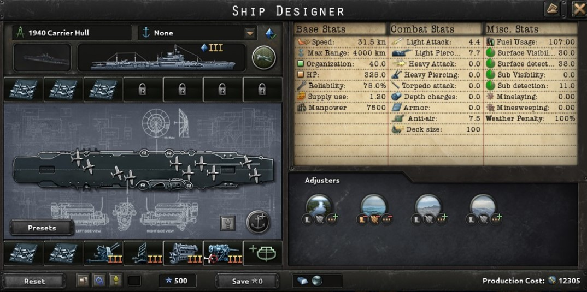

Carrier Engine

A engine that is used to power Carriers
- Carrier Engine I:
- +30% max speed
- 12 fuel usage
- Carrier Engine II:
- +40% max speed
- 16 fuel usage
- Carrier Engine III:
- +50% max speed
- 20 fuel usage
- Carrier Engine IV:
- +60% max speed
- 24 fuel usage
Cruiser Armor

Armor used on medium sized ships.
- Cruiser Armor I:
- -5% max speed
- 6 armor
- Cruiser Armor II:
- -7.5% max speed
- 6% hp
- 8 armor
- Cruiser Armor III:
- -10% max speed
- 10% hp
- 8 armor
- Cruiser Armor IV:
- -12.5% max speed
- 15% hp
- 8 armor
Flightdeck Armor
Armor used on the decks of Carriers.
- -5% max speed
- +25 hp
- 5 armor
Secondary Battery

A navy cannon put on cruisers and larger ships for tasks the main batterys aren't suited for.
- Secondary battery I
- 3 light attack
- 5.5 light piercing
- -2% max speed
- Secondary battery II
- 4 light attack
- 7 light piercing
- -3% max speed
Dual Purpose Secondary Battery

A navy cannon put on cruisers and larger ships for tasks the main batterys aren't suited for. Also can be used in a anti-air role.
- Dual-prupose secondary battery I
- 2 light attack
- 3 light piercing
- 1 anti-air
- -1% max speed
- Dual-prupose secondary battery II
- 3 light attack
- 4 light piercing
- 2 anti-air
- -1% max speed
- Dual-prupose secondary battery III
- 4 light attack
- 7 light piercing
- 2.5 anti-air
- -3% max speed
- Dual-prupose secondary battery IV
- 4.5 light attack
- 7 light piercing
- 3 anti-air
- -3% max speed
Anti-Air

Anti-Air guns meant to protect the ship from aircraft.
- Anti-Air I:
- 2.5 anti-air
- -0.5% max speed
- Anti-Air II:
- 3.5 anti-air
- -0.5% max speed
- Anti-Air III:
- 4.5 anti-air
- -0.5% max speed
- Anti-Air IV:
- 5.5 anti-air
- -0.5% max speed
Radar

Electronics used to detect objects from a long distance.
- Radar I
- 5 surface detection
- Radar II
- 7 surface detection
- 2 sub detection
- +2.5% light battery hit chance
- +2.5% heavy battery hit chance
- +5% anti-air
- Radar III
- 12 surface detection
- 6 sub detection
- +5% light battery hit chance
- +5% heavy battery hit chance
- +7.5% anti-air
- Radar IV
- 18 surface detection
- 14 sub detection
- +10% light battery hit chance
- +10% heavy battery hit chance
- +10% anti-air
Hangar Space
Space inside the carrier used to carry aircraft.
- 500 Manpower
- +20 Deck Size
- -5% max speed